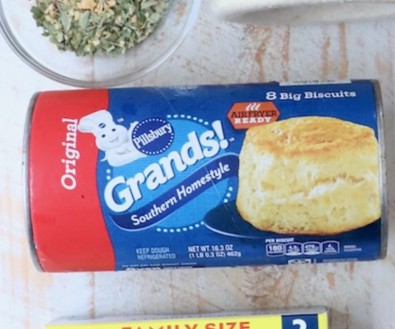
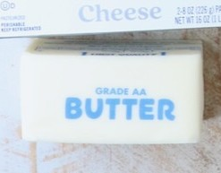
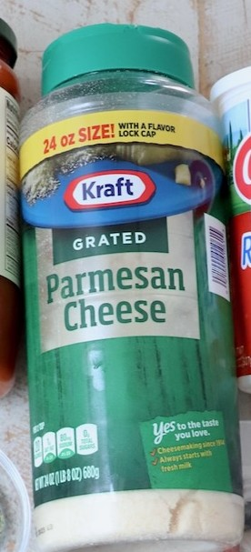
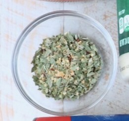
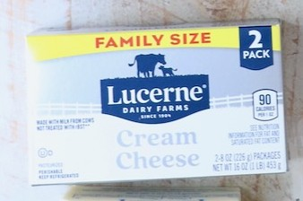
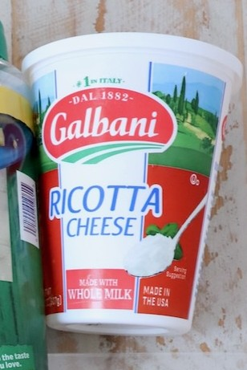
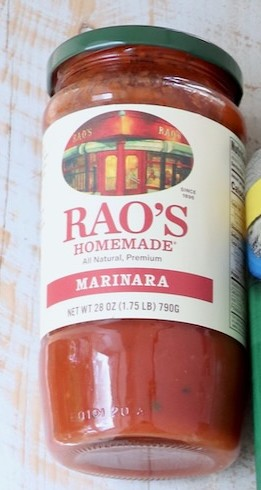
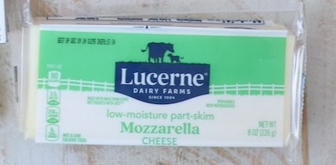
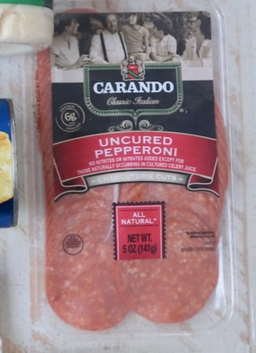

Ingredients
- FOR THE PULL-APART BREAD
-

16.3 ounce can Grands biscuit dough, 8 count -

¼ cup melted butter -

2 teaspoons parmesan cheese, grated -

1 teaspoon Italian seasoning, click link for the recipe
- FOR THE PIZZA DIP
-

8 ounces cream cheese, softened -

1 cup ricotta cheese - 3 teaspoons Italian seasoning, divided
-

1 cup marinara sauce, or pizza sauce -

1 ½ cups mozzarella cheese, grated -

8 slices pepperoni, quartered (optional topping)